地政学
セビリアは内陸に入り込むグアダルキビル川の港と州都機能を持ち、アンダルシア西部、ポルトガル、地中海、大西洋を結びます。植民地交易の記憶と現代の地域行政が、市街の権威を支えます。川が政治を運ぶ街です。
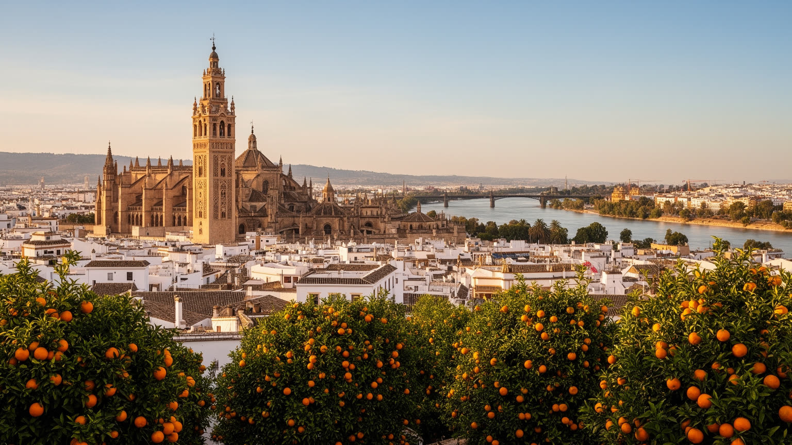
🇪🇸 スペイン / アンダルシア州 / World City Atlas
グアダルキビル川の下流に広がるアンダルシア州都。イスラムとカトリックの遺産、アメリカ交易の記憶、港湾、フラメンコ、聖週間、観光労働、酷暑への適応が、旧市街と川辺で重なる都市です。
都市の骨格
セビリアはアンダルシアの州都であり、南スペインの行政、観光、大学、港湾、農産物流通を支える実務都市でもあります。大聖堂とアルカサルの華やかさの背後に、川の物流、暑さへの知恵、観光労働、サッカー、住宅圧力が重なります。
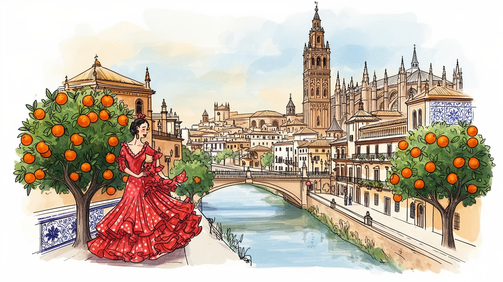
セビリアは内陸に入り込むグアダルキビル川の港と州都機能を持ち、アンダルシア西部、ポルトガル、地中海、大西洋を結びます。植民地交易の記憶と現代の地域行政が、市街の権威を支えます。川が政治を運ぶ街です。
観光、行政、大学、医療、航空部品、農産加工、港湾物流、飲食、小売が雇用を作ります。繁忙期の接客、清掃、宿泊、配達、学生労働、露店は旧市街の魅力を支える一方、賃金と家賃の緊張も生みます。仕事の質も焦点です。
大聖堂、アルカサル、聖週間、フェリア、フラメンコ、バロック美術、イスラム由来の中庭が生活の記憶を作ります。信仰は観光の装飾ではなく、家族、地区、同業組合、音楽を結ぶ都市の時間です。祝祭が街を編みます。
旅行者は大聖堂、王宮、トリアナ、川辺、タパスの夜を巡ります。住民は酷暑、観光混雑、住宅価格、通勤、学校、買い物、静かな路地の維持に向き合い、子どもや高齢者の日常も守ります。涼しい日陰も街の支えです。
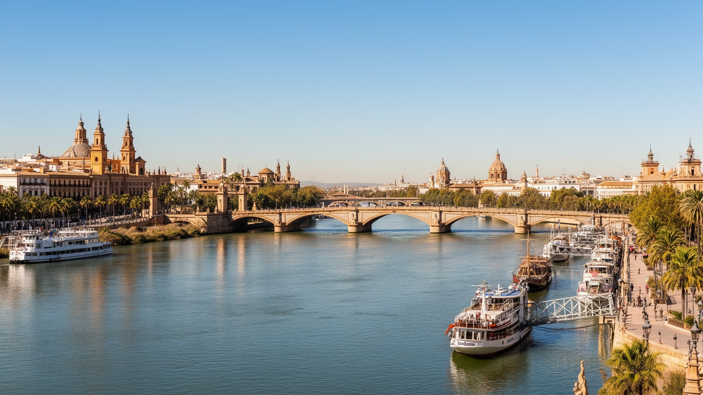
セビリアの地理を理解する鍵は、海から遠いようで海へつながるグアダルキビル川にあります。川は旧市街とトリアナを分ける風景であるだけでなく、かつてアメリカ大陸との交易を管理した都市の権力を支え、現在も内陸港、倉庫、農産物、工業製品、観光船、散歩道を結びます。河口のカディスや大西洋航路との関係を考えると、セビリアは内陸都市と港湾都市の中間に立つ存在です。水路の維持、閘門、浚渫、洪水管理は、観光客が橋の上から見る穏やかな川面の背後で続く実務です。川辺の再整備は市民の余暇を広げましたが、港湾や物流の需要、環境保全、歴史景観、住宅開発の圧力を同時に調整しなければなりません。川は都市を美しく見せる背景ではなく、土地の高さ、道路、商業、祭礼の動線、暑い日の風の流れまで左右します。セビリアを読むには、大聖堂の塔だけでなく、橋の影、岸辺の倉庫、ボート、港へ向かう道路を同じ地図に置く必要があります。水の近さは、交易の記憶と気候リスクを同時に運びます。川があるからこそ、セビリアは南スペインの内陸にありながら外へ開き、地域の農業と世界市場を結ぶ都市として生き続けてきました。夕方の川辺の散歩は、その長い物流史を日常の風景へ変えています。水面を追う視線は、帝国の記憶と現在の物流を同時に拾います。橋ごとの眺めも歴史を変えます。
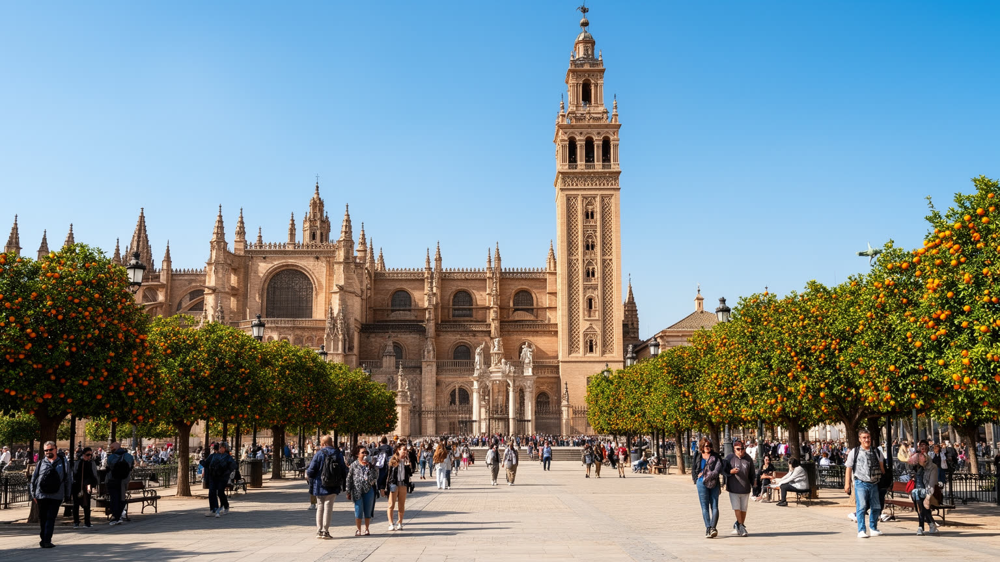
セビリア大聖堂とヒラルダの塔は、都市の中心に立つ宗教建築であると同時に、支配の交代と記憶の重なりを示す場所です。かつてのモスクのミナレットは鐘楼となり、オレンジの中庭や塔の輪郭にはイスラム期の都市の痕跡が残ります。その上に築かれた巨大なカトリック聖堂は、レコンキスタ後の権威、アメリカ交易で得た富、聖人崇敬、葬礼、音楽、都市の誇りを可視化してきました。旅行者は規模や装飾に圧倒されますが、重要なのは建物が単なる過去の展示物にとどまらない点です。礼拝、聖週間の準備、鐘の音、周辺の土産物店、馬車、警備、ガイド、清掃、飲食店が、信仰と観光の境界を毎日調整しています。世界遺産の中心に人が集中すれば、歩行空間、騒音、入場管理、宗教的礼節、地域住民の生活は緊張します。大聖堂を見るとは、ゴシック建築の壮大さだけでなく、ミナレットが鐘楼になった都市の時間、信仰が観光産業に接続される現代の管理、そして暑い石畳を歩く人びとの身体感覚を見ることです。ヒラルダは遠くから街の目印になりますが、近くで見るほど、セビリアが一つの文化に閉じない都市であることを語ります。塔の影は、祈り、権力、商い、記憶を同じ広場に集めています。都市の中心は、過去を保存するだけでなく、現在の使い方を常に選び直す場所です。その重なりが、街の奥行きを深くします。
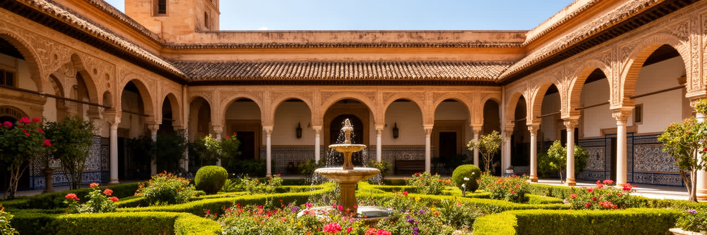
アルカサルは、セビリアの歴史を一つの様式に整理できないことを教える王宮です。イスラム期の宮殿空間、キリスト教王権の改築、ムデハル職人の装飾、水盤、タイル、漆喰、庭園が重なり、政治的な勝利の物語だけでは説明できない混成の美学を作っています。精密な文様や水の流れは観光客の目を楽しませますが、同時に暑い気候への適応、権力者の生活、職人技能、異なる宗教世界の接触を物語ります。王宮は美しいだけでなく、誰が技術を持ち、誰が命じ、誰が記憶から消されるのかを考えさせる場所でもあります。世界遺産としての人気が高まるほど、入場予約、混雑、庭園の維持、文化財保護、地域経済への利益配分が課題になります。アルカサルを読むには、写真に映えるアーチやタイルに立ち止まりつつ、その美が征服、共存、模倣、政治的演出の中で作られたことを忘れない視線が必要です。水と日陰に満ちた庭は、セビリアの酷暑を避ける知恵でもあり、公共空間がどう涼しさを作るかという現代の都市課題にもつながります。王宮の静けさは、街路の熱と観光の喧騒から少し離れた時間を与えますが、その静けさを支えるのは職人、庭師、研究者、案内人の継続的な仕事です。混成の遺産は、飾りではなく都市の深い記憶です。水面に映る装飾は、支配と共存の矛盾を静かに伝えます。庭の涼しさも語ります。
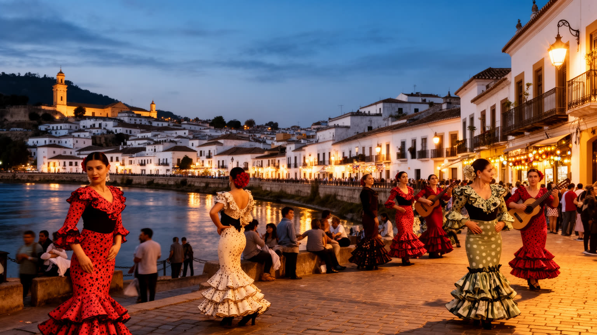
トリアナは、セビリアの中心部から橋を渡った川向こうにあり、陶器、船乗り、職人、フラメンコ、労働者の記憶が重なる地区です。観光案内では情熱的な音楽の故郷として語られがちですが、フラメンコは舞台上の演目だけではなく、ジプシー系住民、アンダルシアの貧困、家族の集まり、酒場、祭礼、差別、移動の歴史と結びついています。手拍子、歌、ギター、踊りの技術は、商品化されるほど外から消費されやすくなりますが、本来は地区の人間関係や記憶を運ぶ表現でもあります。トリアナの市場や陶器店、タイルの壁、川辺のバルを見ると、文化は観光施設の中だけにあるのではなく、食材を買い、仕事帰りに立ち寄り、祭礼の準備をする日常の中にあります。夜には小さな舞台、地元ラジオやSNSで知られる演奏、若者の待ち合わせが路地の気配を変えます。一方で、人気地区になったことで短期滞在、家賃上昇、古い住民の転出、店の入れ替わりも進みます。フラメンコを都市文化として見るには、上演の美しさと同時に、誰がその文化で生計を立て、誰が街から押し出されるのかを考える必要があります。川を挟んだ距離は小さいですが、トリアナには中心部とは違う誇りと語り口があります。橋を渡る行為は、セビリアの文化が周縁と中心の往復から生まれてきたことを知る入口になります。音の背後には、暮らしの手触りがあります。
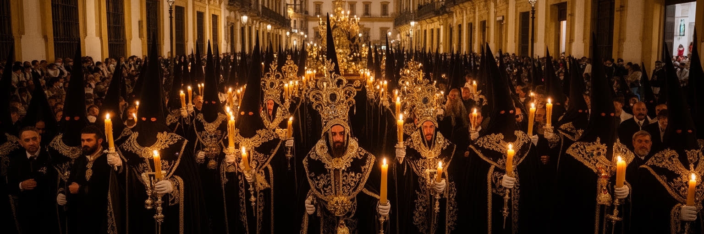
セビリアの聖週間は、都市の宗教性、地区共同体、観光、労働、公共空間の使い方を最も濃く見せる時間です。各地区の兄弟団は聖像を載せた山車を担ぎ、音楽、ろうそく、香、沈黙、群衆が旧市街の通りを満たします。外から見ると壮麗な祭礼ですが、準備は一年を通じて続き、信仰、家族、衣装、倉庫、修理、寄付、警備、交通規制、清掃、救急体制が細かく組み合わされます。聖週間は観光客を呼び、ホテルや飲食店に大きな収入をもたらす一方、住民の移動、騒音、混雑、宗教的敬意の保ち方にも緊張を生みます。フェリア・デ・アブリルもまた、踊り、衣装、食、馬、仮設小屋を通じて都市の社交を作りますが、参加のしやすさには階層や人脈の差が表れます。祭礼は伝統として固定されたものではなく、誰が担い、誰が見物し、誰が働き、誰が排除されるのかによって毎年形を変えます。セビリアの街路は、普段は観光と通勤の空間ですが、祭礼の時には信仰と記憶の舞台になります。その変化を読むと、都市の公共空間が単なる通路ではなく、人びとが所属を確認する場所であることが分かります。祈りの行列と観光のカメラが隣り合う時、セビリアは自分の伝統を守りながら外の視線とも向き合っています。祭礼の力は、華やかさより継続する手間にあります。その手間が地区の信頼を毎年結び直します。
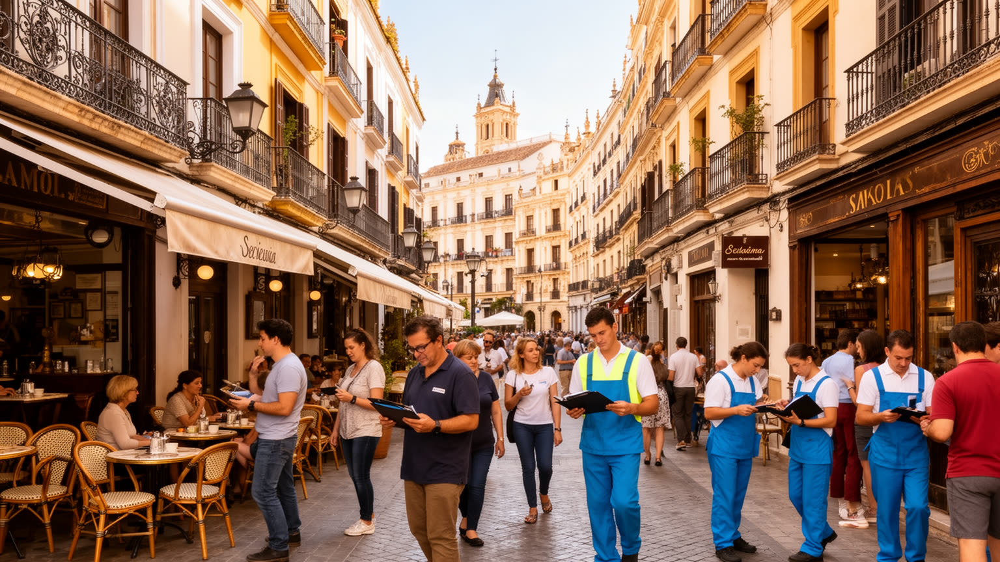
セビリアの観光は、大聖堂、アルカサル、トリアナ、タパス、祭礼、映画のような路地を通じて強い魅力を持ちます。しかし観光都市の明るい表情は、宿泊、清掃、厨房、配膳、ガイド、警備、土産物店、交通、修理、洗濯、予約管理といった多くの仕事に支えられています。繁忙期には雇用が増えますが、短期契約、低賃金、暑さの中の屋外労働、夜間勤務、チップへの依存、住まいの遠さが働く人を疲弊させることもあります。旧市街の人気は短期滞在住宅を増やし、家賃上昇や近隣の生活音の変化、日用品店の減少を招きます。観光が地域の収入を作ることは確かですが、住民が中心部で暮らし続けられなくなれば、街の魅力そのものが空洞化します。セビリアの観光を考える時、来訪者数やホテル稼働率だけでは足りません。文化財保護、住宅政策、労働条件、公共交通、廃棄物管理、静かな生活の権利を同時に見なければ、都市は美しい消費空間に偏ってしまいます。旅行者が地元の市場や商店を使い、祭礼や信仰への距離を保つことも重要です。観光労働の現場を見ると、世界遺産の価値は石造建築だけでなく、毎朝街を整え、客を迎え、暑い午後を働く人びとの手にも宿っていることが分かります。土産物の路上販売や配達も旧市街の経済を支えます。持続する観光は、住民の日常を削らない形でしか成り立ちません。
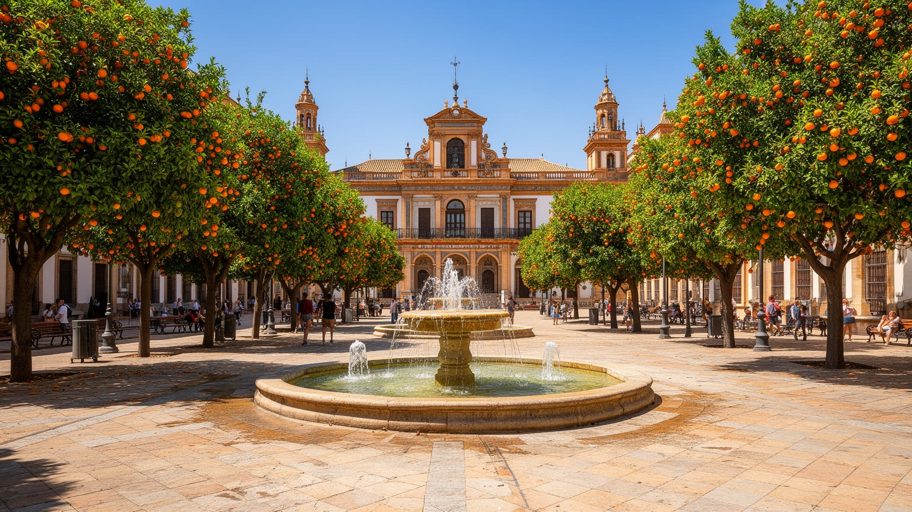
セビリアの夏は、都市の美しさを試す厳しい条件です。内陸に近い地中海性気候の下で気温は非常に高くなり、日中の石畳、広場、バス停、観光行列、屋外労働は身体への負担を増します。白い壁、狭い路地、パティオ、噴水、オレンジ並木、日除け、厚い壁は、長い時間をかけて暑さに対応してきた都市の知恵です。しかし気候変動で熱波が激しくなれば、伝統的な工夫だけでは足りません。高齢者、子ども、屋外で働く人、エアコンを十分に使えない世帯、観光客、ホームレス状態の人は、熱ストレスを受けやすくなります。涼しい公共空間、街路樹、飲み水、夜間の交通、建物の断熱、学校や医療施設の対策は、景観の問題ではなく命を守る都市政策です。観光都市では、真夏の混雑や待ち時間の管理も必要になります。セビリアの気候適応を読むと、歴史的な中庭や水盤の美しさが、単なる装飾ではなく環境技術でもあったことが分かります。同時に、冷房に頼る生活が電力消費や家計負担を増やす現実も見えます。夕方に人が再び街へ出るリズム、日陰を選ぶ歩き方、昼の休み方は、暑い都市の文化です。これからのセビリアは、その文化を守りながら、熱に弱い人を置き去りにしない仕組みを作る必要があります。日陰は快適さである前に、都市の公平を測る資源です。涼しさを共有できるかが、夏の公共性を決めます。
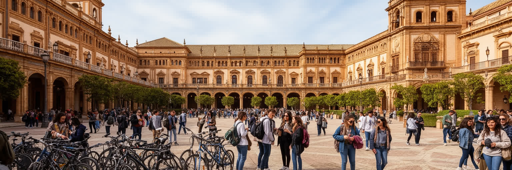
セビリアは観光だけの都市ではなく、大学、研究、行政、医療、専門職の集まる学術都市でもあります。セビリア大学の中心には、かつての王立たばこ工場を転用した建物があり、産業史、労働の記憶、教育機能が重なります。学生は旧市街、ネルビオン、ロス・レメディオス、郊外キャンパス、図書館、カフェ、路面電車を行き来し、街の消費、夜の文化、住宅需要、政治的議論を動かします。大学は地域の若者に進路を開くだけでなく、医学、工学、人文、文化財保護、環境、都市計画の知識を生みます。一方で、学生向け賃貸や短期滞在が増える地区では、家賃や近隣関係の変化も起きます。若者にとってセビリアは魅力的な街ですが、卒業後の雇用、賃金、研究職の不足、マドリードや国外への移動も難しさです。サッカーではセビージャFCとベティスの熱が地区の会話やメディアを動かし、学生や家族の週末にも入り込みます。州都として行政職や専門サービスの機会はあるものの、観光とサービス業に偏りすぎれば、技能を持つ若者が安定した仕事を見つけにくくなります。学術都市としてセビリアを見ると、歴史的建築の中で未来の産業や社会政策を考える都市の姿が見えてきます。図書館の静けさ、学生のデモ、カフェでの議論、研究室の実験は、大聖堂や王宮とは別の都市の力です。知識の循環が地域の企業、学校、病院、文化財保護へ届く時、過去の遺産だけでなく次の時代を作る場所になります。
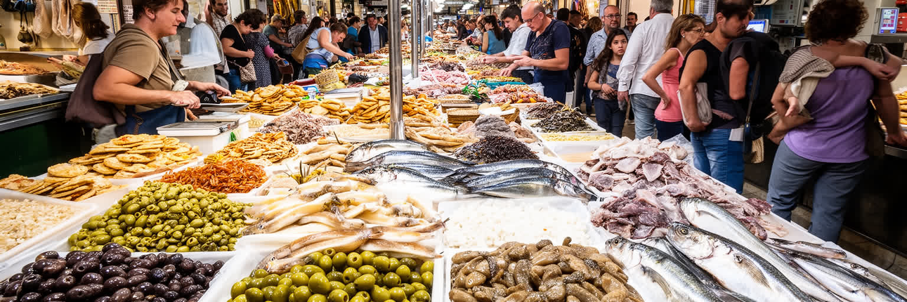
セビリアの食文化は、アンダルシアの農業、川と海の流通、暑さのリズム、バルの社交からできています。市場にはオリーブ、柑橘、野菜、魚介、ハム、チーズ、豆、香辛料が並び、家庭、飲食店、観光客向けのタパスへ流れます。小皿を分け合う食べ方は、単なる名物ではなく、暑い日に長く座りすぎず、人と会話しながら少しずつ食べる都市の時間でもあります。ガスパチョ、サルモレホ、揚げ魚、ほうれん草とひよこ豆、甘い菓子、シェリーに近い酒文化は、歴史と気候を同時に映します。市場やバルは観光客にとって楽しい場所ですが、住民にとっては価格、品質、近所づきあい、仕事帰りの休息、家族の食卓を支える実用の場です。人気地区では飲食店が観光向けに寄りすぎ、地元の買い物や静かな生活が圧迫されることもあります。食を通じてセビリアを見ると、都市の魅力が名所だけではなく、午後の暑さを避ける一杯、夕方に再び開く店、祭礼前の仕込み、家族で分ける料理の中にあることが分かります。食の現場には、農村からの供給、移民労働、厨房の長時間勤務、廃棄物、観光価格の問題も含まれます。市場の香りとバルのざわめきは、セビリアを生活都市へ戻す手がかりです。皿の上には、川の物流、畑の季節、労働者の手、地区の記憶が乗っています。食べる時間の配分にも、暑い都市の知恵が表れます。
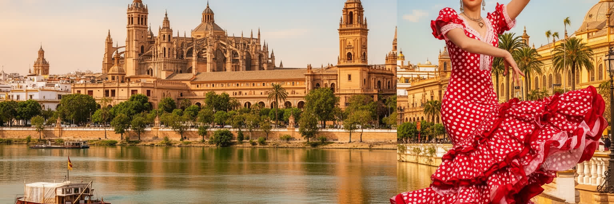
セビリアを一つの観光イメージに閉じ込めることはできません。大聖堂とヒラルダ、アルカサル、トリアナ、聖週間、フェリア、タパス、白い路地は強い記号ですが、その背後には川港、州都行政、大学、病院、農産物流通、観光労働、住宅問題、酷暑への適応が重なっています。イスラムとカトリック、王権と職人、植民地交易と地域の貧困、祭礼の高揚と日常の静けさを同じ地図に置くと、セビリアは単なる美しい旧市街ではなく、歴史を使いながら暮らしを続ける複雑な都市として見えてきます。観光客が多く訪れることは都市の収入を作りますが、文化財と住民生活の均衡を崩せば、街の厚みは失われます。暑さが厳しくなる時代には、日陰、水、緑、公共交通、住宅の断熱が、遺産保護と同じくらい重要なテーマになります。セビリアの魅力は、塔の遠景だけでなく、橋を渡る風、夕方に開くバル、祭礼の準備をする倉庫、大学の廊下、サッカーの歓声、暑い昼に閉じた木戸にもあります。この街を読むには、華やかさを楽しみながら、子どもや高齢者が中心部で普通に過ごせるか、誰がそれを支え、誰が住み続けられるのかを考える必要があります。川と石と音楽と日陰が交差する場所で、セビリアは過去の名声を現在の生活へ翻訳し続けています。その翻訳の質が、これからの都市の価値を決めます。美しい記号の間にある普通の暮らしこそ、読み解くべき核心です。